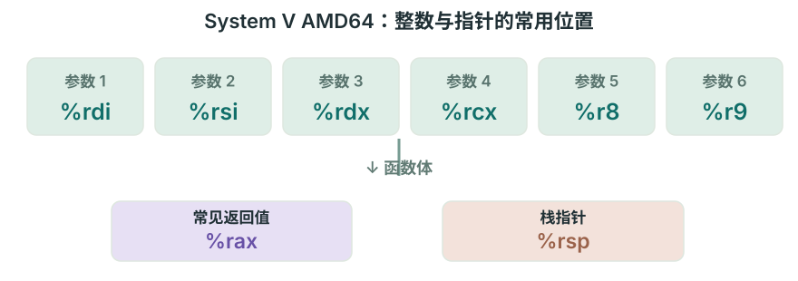
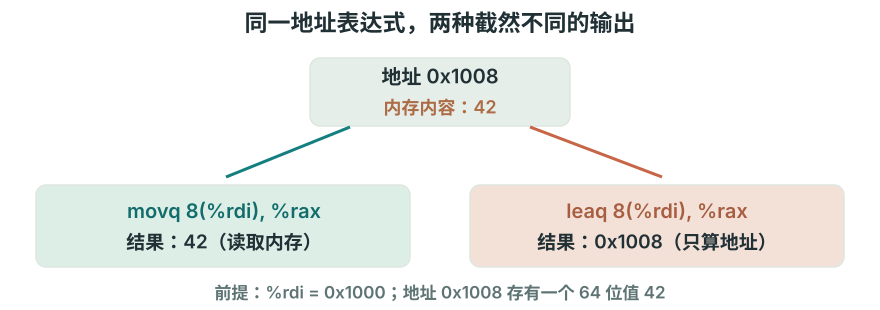
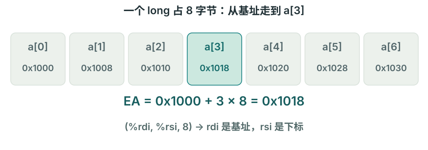

计算机系统 · 机器级程序 / 04
一行 C 代码，CPU 到底做了什么？
假设有 return a[i] + 7;。人看见“数组取值，再加七”；x86-64 则要从寄存器里取出基址和下标，算出有效地址，访问内存，最后执行加法。汇编是理解这些数据路径的放大镜。
以下汇编统一采用 Linux/macOS 上常见的 System V AMD64 ABI 与 GNU AT&T 语法，假定 long 为 64 位；Windows x64 的传参规则不同。示例是符合语义的教学译法，不声称所有编译器都生成完全相同的指令。
4.1 寄存器：CPU 里离运算最近的工作台
一个 x86-64 核心具有 16 个 64 位通用整数寄存器。它们不是“16 种不同用途的内存”，而是一组高速存储位置；ABI 决定了函数间怎样协作使用。对 System V AMD64 中的整数/指针参数，前六个常用寄存器按顺序是 %rdi、%rsi、%rdx、%rcx、%r8、%r9，返回值通常放入 %rax。

| 用途 / 保留规则 | 64 位寄存器 | 关键事实 |
|---|---|---|
| 参数与调用者易失 | rdi rsi rdx rcx r8 r9 | 可用于前六个整数/指针参数；调用方如需跨调用保留，自己保存 |
| 返回值与临时寄存器 | rax r10 r11 | 通常调用者易失；rax 用于常见整数返回值 |
| 被调用者保存 | rbx rbp r12 r13 r14 r15 | 使用后须按 ABI 恢复原值；rbp 不一定用作帧指针 |
| 栈指针 | rsp | 始终需要按调用约定维持正确的栈状态 |
| 特殊寄存器 | rip / rflags | 指令指针与标志，不属于上述 16 个通用寄存器 |
同一个寄存器还有不同宽度的名字：%rax（64 位）、%eax（低 32 位）、%ax（低 16 位）、%al（低 8 位）。在 64 位模式下，写入 32 位子寄存器会把对应 64 位寄存器的高 32 位清零；写入 8 或 16 位子寄存器通常保留其余位。
movq $-1, %rax # rax = 0xffffffffffffffff
movl $1, %eax # rax = 0x0000000000000001
movb $2, %al # rax = 0x00000000000000024.2 同一个括号，MOV 会读内存，LEA 只算地址
先记住 AT&T 语法的方向：指令 源, 目的；寄存器前缀为 %，立即数前缀为 $，常见的 b/w/l/q 后缀分别表示 1/2/4/8 字节。

movq 8(%rdi), %rax 读取地址 0x1008 的 8 字节；leaq 8(%rdi), %rax 得到的只是 0x1008。movq %rdi, %rax # 复制寄存器的 64 位值
movq 8(%rdi), %rax # 从内存读 8 字节
movq %rax, 8(%rdi) # 往内存写 8 字节
leaq 8(%rdi), %rax # 仅计算地址，不读内存一般 mov 的两个操作数不能同时都是内存位置；需借助寄存器中转。lea 本意是 Load Effective Address，因此可以把比例与偏移组合成加法：leaq (%rdi,%rsi,4), %rax 计算 rdi + 4*rsi，但不会解引用这个地址，也不会像普通 add 那样修改算术条件标志。这是一种语义便利，不等于在所有 CPU 上永远“零成本”或更快。
4.3 地址计算：把数组访问拆成一条公式
典型的 AT&T 内存寻址形式是 D(Rb,Ri,S)，有效地址等于位移 D、基址寄存器 Rb 和变址寄存器 Ri 乘比例因子 S 之和。比例只能选 1, 2, 4, 8；变址位置不能使用 %rsp。位移可以省略；symbol(%rip) 是常见的相对指令指针寻址形式。
假设 long *a 指向地址 0x1000，每个元素 8 字节，则 a[3] 位于 0x1000 + 3×8 = 0x1018。把公式交给 CPU 的地址生成逻辑：
/* System V AMD64：a 在 rdi，i 在 rsi */
long read_item(const long *a, long i) {
return a[i] + 7;
}
/* 一种语义等价的教学汇编，不保证编译器逐字生成 */
read_item:
movq (%rdi,%rsi,8), %rax # 读取 a[i]
addq $7, %rax # 加 7
ret
movq 使用计算出的有效地址访问内存；leaq 则只保留计算出的地址本身。交互：调整下标，观察地址如何变化
演示假设基址固定、每个 long 为 8 字节，且下标有效；真实程序还需保证指针位于合法对象范围内。
4.4 算术指令：尤其要警惕负数除法
addq、subq 等在目的操作数上就地计算；andq、orq、xorq 做位运算。salq/shlq 左移，shrq 逻辑右移，sarq 算术右移并复制符号位。但算术右移不是一般情况下的 C 有符号除法：例如二补码的 -9 >> 3 在典型 x86 机器上向负无穷方向取整为 −2，而 C 的 -9 / 8 向零截断是 −1。C 中负有符号数右移的语义还取决于所采用的语言标准版本。
/* 语义示例：x 与 y 均为 long，且 y 非 0，
同时避免 LONG_MIN / -1 的不可表示商 */
long quotient(long x, long y) { return x / y; }
/* x86-64 对应的常见指令序列 */
movq %rdi, %rax # 被除数放入 rax
cqto # 将 rax 的符号扩展到 rdx:rax
idivq %rsi # 商进入 rax，余数进入 rdx
ret用 lea 做小常数乘法是常见的编译器策略；但带地址形式的算术与 C 的“有符号溢出未定义”之间仍有语言层面的区别。读汇编时，把机器指令的位级行为与C 源程序的可移植语义分开看。
C 表达式规定语言语义；ABI 规定函数间如何传值和保存寄存器；ISA 指令规定机器如何实际移动、寻址与算术。不要把某一种编译器输出当成语言标准。
4.5 验证：自己生成汇编，再反向阅读
将上述 read_item 的 C 实现保存为 machine.c，在 x86-64 Linux 环境中运行：
cc -std=c11 -O1 -S machine.c -o machine.s
cc -std=c11 -O0 -S machine.c -o machine-O0.s
cc -std=c11 -O2 -c machine.c -o machine.o
objdump -dr machine.o对照三份结果观察：参数在哪里？数组元素如何寻址？O0 与 O2 是否产生相同数量的指令？实际输出随编译器、平台和版本而不同，你自己的反汇编结果才是对应环境的证据。在非 x86-64 架构上会看到另一套指令集，这不代表源代码不正确。
自测
如果 %rdi = 0x2000、%rsi = 5，那么 leaq 16(%rdi,%rsi,8), %rax 后 %rax 是多少？会不会读取这个地址上的内存？
查看推导
有效地址为 0x2000 + 16 + 5×8 = 0x2038；lea 不读取该地址上的内存。
再推一步：LEA 计算的究竟是地址还是内容？
考察 long *slot(long *base, long i)，若 sizeof(long)==8 且使用 System V AMD64 ABI，那么基址、下标通常分别到达 %rdi、%rsi。计算 &base[i] 的地址可用下述指令表达，并不读取该地址内的 8 字节。
long *slot(long *base, long i) { return &base[i]; }
/* 语义等价的 AT&T 风格示意（并非指定编译器唯一输出）：
leaq (%rdi,%rsi,8), %rax
ret
*/%rax = %rdi + 8 × %rsi，不解引用。
movq (%rdi,%rsi,8), %rax 会从算出的地址读取 8 字节。
地址计算还必须服从 C 的指针规则：&base[i] 仅在同一数组对象内（或合法的一端越界位置）才有相应的指针运算语义；能写出汇编地址公式，不代表任意下标都有效。
技术深描 · 04 / 调用约定
同一段 C 代码，为何在 Windows x64 上参数落在不同寄存器？
ABI 是编译器、汇编器与操作系统之间关于“参数放哪、栈怎么对齐、谁负责保存”的契约。同一个 C 源文件可以编译成不同的机器指令序列，因为两份 ABI 把这些约定定成了不同规则；这并不意味着 C 语言语义发生了变化。
因此读 x86-64 汇编前，第一步是确认目标平台与 ABI，而不是套用记忆中的寄存器表。系统调用约定又是另一套规则，不能与函数调用约定混用。
python3 examples/deep-ch01-04.py 04模型把两份 ABI 的整数参数落点写成显式映射并断言其关系：Windows 的前四个寄存器是 System V 第 3、4、5、6 个寄存器的重排，两者都从第某个参数开始转向栈。语料依据 x86-64 System V psABI 与 Microsoft x64 调用约定文档；模型是教学示意，不覆盖浮点/向量参数。
带走什么？
阅读 x86-64 的有效次序是：先认出寄存器角色，再判断源/目的和宽度，随后把 D(Rb,Ri,S) 翻译成地址公式，最后区分“计算地址”和“访问内存”。下一章会在这些基础上继续看条件码、分支与循环。
资料与边界
参阅 CS:APP 3e 学生资源（教材第 3 章）、Intel® 64/IA-32 软件开发手册 与 System V AMD64 psABI。本课程第 4 章是教材机器级表示内容的上半部分；Windows x64、不同编译器与调试符号有各自约定。